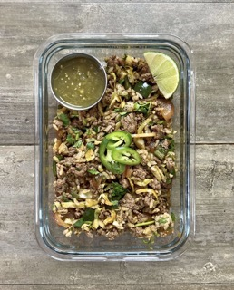

Salsa Verde Beef Bowls
Recipe Created By: Josh Cortis

Description
These Salsa Verde Beef Bowls are made up of ground beef, red onions, poblano peppers, cabbage, cilantro lime rice and salsa verde to pour over the top. This is a quick and easy recipe that can be finished in under an hour.
Prep Time
10 Minutes
Cook Time
35 Minutes
Nutrition Info
Per Serving - Makes 5
540kcal | 39g C | 42g P | 24g F
Ingredients
For The Rice
- 3 cups (450 g) cooked rice
- 2 tbsp (30 g) lime juice
- 0.25 cup (20 g) chopped cilantro
- salt to taste
For The Beef And Vegetables
- 2 lbs (908 g) ground beef (90/10)
- 2 (150 g) bell pepper
- 1 medium (200 g) red onion
- 1 small (227 g) green cabbage
- 2 tbsp (30 g) oil
- 1 tbsp (15 g) minced garlic
- 1 tsp (3 g) cumin
- 1 tsp (3 g) chili powder
- 1 tsp (3 g) smoked paprika
- 1 tbsp (15 g) lime juice
- salt and pepper to taste
- 1.25 cups (300 g) salsa verde
- 1 jalapeño (optional)
Instructions
For The Rice
- Make enough rice to yield 3 cups of cooked rice. 1 cup of dry rice will make between 2-3 cups of cooked rice depending on what type of rice you use.
- Once the rice has finished, add 3 cups of rice to a bowl and mix in 2 tbsp of lime juice and ¼ cup chopped cilantro.
For The Beef And Vegetables
- While the rice is cooking, prepare your beef and vegetables. For the nutritional estimates provided, I have included 2 tbsp of oil to use in the cooking process. Use that amount as needed in the cooking of the beef and vegetables.
- In a large skillet over medium high heat, add about a tsp of the oil and cook the beef until it has browned. The beef should have enough fat that you won't need to use a ton of oil.
- While the beef is browning, wash and cut all of your vegetables.
- Cut the red onion into thin slices, the peppers into a medium dice, and shred the cabbage by cutting into thin slices. Mince up 1 tbsp worth of garlic. Chop the cilantro into small pieces for the cilantro lime rice once the rice has finished.
- Once the beef is finished browning, remove it from the skillet (or use a separate skillet) and add 1 tbsp of oil over medium heat. Toast the cumin, chili powder, and smoked paprika in the oil for about 30 seconds and then raise the temperature to medium high and add in the onions and peppers to cook. Add more oil if needed.
- Allow the onions and peppers to cook and brown for 4-5 minutes then add it the shredded cabbage and continue cooking until it has softened, around 3-5 minutes. Season lightly with salt and pepper.
- Once the vegetables have softened, add back the beef to the pan as well as the cilantro lime rice and squeeze about 1 tbsp of lime juice over the top. Mix everything until well incorporated.
- Taste test and adjust flavors with salt, pepper, and extra lime juice as necessary.
For The Salsa Verde
- Shake up your jar of salsa and divide it into 5 smaller containers of ¼ cup each.
Plating
- This recipe makes 5 servings. Divide the contents of the pan evenly between your 5 containers and add a small container of salsa to each.